Действительно, однажды
начав работать со слоями, Вы уже не сможете от них
отказаться. Они являются, наверное, самым важным
инструментом при работе с графикой в GIMP. Все основные
приемы работы - создание тени, рельефа, шаблонов,
анимации и т.д. - все это завязано на работе со стоями.
Итак, давайте разберемся, что собой
представляют слои. Представьте папку прозрачных листов,
на которую Вы смотрите сверху. Вы видите насквозь все,
что нарисовано на этих листах. Некоторые из них могут
быть непрозрачнми и скрывать нижние, некоторые могут
быть меньше или больше других, но слои - это ничто иное
как наложенные друг на друга изображения. Вы видели как
создают мультфильмы? Берется фон, на него накладывается
прозрачный лист с окружающими предметами, затем
прозрачный лист с персонажами и т.д. Здесь все тоже
самое!
Кроме того, используя слои,
можно экспериментировать с изображением, накладывая на
него новые части, не повреждая оригинал. Достаточно лишь
создать новый прозрачный слой, произвести в нем нужные
изменения, сдвинуть, уменьшить, отразить и т.д., при
этом не повредив исходник - слой всегда можно удалить.
Рассмотрим основные приемы и идеи
работы со слоями. Начнем с рассмотрения диалогового окна
слоев. Это окно вызывается клавишами Ctrl+L или через
меню изображения
Слои - Слои, каналы. контуры.
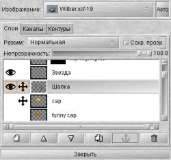
Диалог слоев.
В центре диалога слоев находится собственно сам список
слоев изображения. Каждому слою соотвествует его
собственное имя, которое можно поменять дважды кликнув
по слою. Активный слой - слой в котором происходит
работа - выделен полосой. Изображение глаза слева от
слоя означает что слой является видимым, т.е. в окне
изображения он отобра жается. Соотвественно слой
невидимый отображаться в окне изображения не будет. Эта
удобная возможность позволяет на время оключать мешающие
работать слои. Отключение или включение слоя происходит
путем клика наизображение глаза.
Изображение крестика (похожего на курсор
перемещения) слева от слоя означает, что при меремещении
слоев, выделенных этим значком, будут двигаться все
отмеченные, а не только активный.
Хочу
отметить важную особенность слоев. Если в одном слое
создать контур выделения, например по цвету, а в диалоге
слоев после этого выбрать другой слой, то выделенный
контур будет применяться уже к новому слою!
Выбор
изображения. В самом верху диалога слоев есть меню
выбора изображения "Изображение". Если у Вас открыто
несколько окон с изображениями, это меню позволяет
выбрать нужное изобжаение для работы с его слоями. При
включенной кнопке "Авто", диалог слоев автоматически
выбирает для работы то изображение, которое в данный
момент находится в фокусе. При этом в меню "Изображение"
появится уменьшеный вид выбранного изображения.
Закладки.
Ниже мы видим закладки:
Слои, Каналы, Контуры. Мы
работаем со слоями, поэтому остальные закладки трогать
не будем. Рассматривать работу с каналами и контурами
нужно отдельно и я не буду сейчас этого делать.
Кнопки. В
диалоге слоев есть шесть основных кнопок:
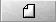
- Создание
нового слоя. При нажатии на эту кнопку можно задать
параметры нового слоя - его размеры и название, а так же
указать какого цвета будет его фон - прозрачный, белый и
т.д. Кроме того, если у Вас есть плавающее выделение,
например только что написанный текст или вставленный
объект, то нажатие на эту копку приведет к тому, что
плавающий объект юудет помещен на новый слой. Причем
размер этого слоя будет оптимизированным, т.е. занимать
не больше места, чем это нужно объекту. Такая
оптимизация позволяет занимать изображению меньше места
в памяти и на диске.
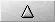
- поднимает
текущий слой наверх в стопке слоев.
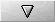
- опускает
текущий слой наверх в стопке слоев.
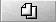
- создает
копию слоя.
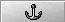
- прицепляет плавающее выделение к текущему
слою.
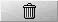
-
удаление слоя.
Режим. Меню
"Режим" позволяет производить "математические" операции
со слоями - складывать, вычитать, умножать, делить,
добавлять и т.п. Мне сложно объяснить эти действия с
точки зрения производимых над изображениями действий,
однако я могу показать как этим пользоваться на
примерах.
Предположим, мы хотим умножить
два слоя. Для этого нужно в диалоге слоев выбрать
верхний и установить для него необходимый режим
"Умножение". Таким образом, верхний слой умножится с
последующим за ним. На сколько я заметил в ходе
экспериментов с режимами, есть разница какой из слоев
будет находиться сверху. Например при делении слоя А на
слой В эффект будет другой, чем если разделить слой В на
А. Ниже приведены примеры операций со слоями, которые
помогут понять что же на самом деле происходит. Колонка
"Слои наоборот" показывает различие в результате при
разном расположении слоев если такое различие есть.
Верхний
слой |
Операция |
Нижний
слой |
Результат |
Слои
наоборот |
|
Умножение |
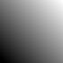 |
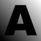 |
|
|
Деление |
|
|
 |
|
Осветление |
|
|
|
|
Перекрытие |
|
|
|
|
Разница |
|
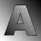 |
|
|
Добавление |
|
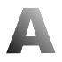 |
|
|
Вычесть |
|
|
|
Операции
со слоями Из приведенных
выше примеров видно, что в некоторых случаях разница в
результате в зависимости от расположения слоев
действительно есть. Если быть честным, то я привел в
примере не все режимы операций со слоями. Существуют еще
режимы "Растворение", "Замена светлым", "Замена темным",
"Тон", "Насыщенность", "Цвет", но они дают похожие
результаты на те, что привел я. Поэкспериментируйте
сами, чтобы посмотреть на их действие.
Таким образом, мы видим, что операции со
слоями дают массу интересных эффектов. Мы можем вырезать
один слой из другого, сделать так. чтобы в одномы была
видна часть другого и т.п. В полной мере эти возможности
показаны в примерах
работы с GIMP у меня на сайте. Операции со слоями
используются почти в каждом из примеров.
Сохранять
прозрачность. Следующий параметр диалога слоев - это
"Сохранять прозрачность". Он позволяет не использовать в
работе прозрачные точки. Это очень важный момент,
например для создания тени. Представим, что у нас есть
прозрачное изображение, в котором нарисована буква А со
сложной закраской:
Фон шашечками обозначает
прозрачность изображения. Попробуем что-либо нарисовать
на этом изображении, не включая параметр "Сохранять
прозрачность".
Мы видим, что черный
крест перечеркнул все изображение. Если проделать тоже
самое, но включив параметр "Сохранять прозрачность"
мы увидим, что прозрачные области
остались незатронутыми.
Непрозрачность.
Этот параметр устанавливает степень непрозрачности слоя.
При значении 100 слой является абсолютно непрозрачным.
Чем меньше это значение, тем больше бедут просвечивать
остальные слои через этот слой.
И, наконец, в самом низу
расположена кнопка "закрыть", которая, как ни странно,
закрывает диалог слоев. :)
Итак, мы
рассмотрели окно диалога слоев и изучили его
возможности. Однако операции со слоями на этом не
ограничиваются.
С каждым слоем в
изображении можно производить массу операций независимо
от остальных слоев. Честь этих свойств вызывается через
меню изображения в пункте "Слои", другие через нажатие
правой клавиши на слое в диалоге слоев. Начнем с
последнего.
При нажатии правой
клавиши мыши на любой из слой из списка в диалоге слоев
появится всплывающее меню. Первые пять его пунктов
повторяют кнопки диалога слоев с той только разницей,
что кнопки перемещения слоя по стопке вынесены в
отдельный пункт "
Стопка", а копирование слоев
отсутсвует.
Следующая группа пунктов
меню позволяет производить изменения размеров
слоя:
Размер границы слоя - (у меня почему-то
этот пункт носит название "Слой Boundary Size")
позволяет уменьшить или увеличить размер слоя не
затрагивая размер изображения.Это можно использовать,
например, в случае, когда размер изображения в слое
намного меньше самого слоя.
Масштабировать
слой - изменяет размер слоя вместе с изображением,
т.е. масштабирует его аналогично пункту меню
Изображение - Масштабировать.
Изменить
размер по изображению - изменяет размер слоя по
границам общего изображения. Т.е. если размер слоя
больше или меньше размера изображения, этот пункт
позволит выровнять границы слоя по границам изображения.
Причем если изображение имеет альфа-канал
(прозрачность), то недостающее место при изменении
размера будет заполнено прозрачным цветом, если не
имеет, то цветом фона.
Третья группа
пунктов меню производит объединения
слоев:
Объединить видимые слои - объединяет
все видимые слои, при этом дает на выбор несколько
вариантов размера объединенного слоя.
Объединить с
предыдущим - объединяет текущий слой с предыдущим.
Часто бывает полезно после использования свойства
"Режим".
Свести изображение - объединяет все
слои в один, при этом не отображая скрытые слои.
Перепрыгнем через группу меню
посвещенную работе с маской и рассмотрим следующую,
позволяющую работать с альфа-каналом.
Добавить
альфа-канал - добавляет альфа-канал (прозрачность).
Эта функция применяется только для слоя, который
является фоном изображения. Новое созданное изображение
имеет всегда один слой, называющийся "фон". Этот слой
нельзя перемещать в стопке слоев и производить с ним
многие действия как с обычными слоями. Используя этот
пункт меню мы преобразуем слой в обычный. Это не
относится к новому изображению с прозрачным фоном. Оно
уже имеет альфа-канал.
Альфа-канал - выделенная
область - создает контур выделения по прозрачным
участкам изображения. Например, если мы имеем прозрачное
изображение с нарисованной на нем буквой А, то
применение этого пункта меню даст выделение только буквы
А, при этом неважно какого она цвета или текстуры:
Правка атрибутов слоя
позволяет изменить имя слоя.
Теперь
вернемся к пропущенной группе меню. Эта группа пунктов
предназначена для работы с маской слоя. Честно говоря,
объяснить что такое маска слоя мне сложнее всего,
несмотря на ее важность и простоту в использовании.
Смысл в том, что маска слоя показывает какие участки
слоя являются отображаемыми, а какие нет. Неотображаемые
участки слоя будут прозрачными. Для указания
отбражаемости или неотображаемости участка изображения
используется белый и черный цвет. Белый цвет у маски
показывает непрозрачные участки, черный - прозрачные.
Оттенки серого будут показывать степень прозрачности
маски - чем темнее, тем прозрачнее.
Это свойство
маски используется почти во всех примерах
работы у меня на сайте. Попробую
объяснить на примере. Предположим, что у нас есть два
изображения:
Выберем первое и в диалоге слоев вызовем
всплывающее меню в котором выберем пункт
Добавить
маску слоя. Маска бывает трех типов:
Белая
(непрозрачная),
Черная (прозрачная) и
Альфа-канал слоя. Последний пункт означает, что
мы получим маску слоя в которой черный цвет будет
соответствовать прозрачным местам изображения, а белый
непрозрачным. В данном примере нам нужна белая маска.
Маска слоя помещается рядом с
изображением слоя в диалоге слоев. В ней, как и в
обычном изображении можно рисовать, копировать, стирать,
применять фильтры. Нужно лишь кликнуть на ее изображение
в списке слоев. Скопируем (ctrl+C) второе изображение и
вставим (ctrl+V) его в маску первого.
Для большей наглядности я поместил
под первый слой заливку под дерево. Итак, в том месте,
где в маске был черный цвет мы видими деревянный фон.
Инвертировав маску (Alt+I) получим все наоборот:
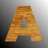
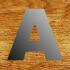
Отдельный интерес представляет
заливка маски градиентным переходом из черного цвета в
белый:
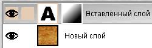
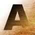
Работу пункта "Создать маску слоя"
мы уже разобрали. Рассмотрим остальные:
Применить
маску слоя - заменяет на прозрачные все места
изображения куда показывала маска слоя черным цветом.
Белые оставляет без изменения, а оттенки серого заменяет
на различной степени прозрачность.
Удалить маску
слоя - удаляет маску слоя.
Маска - выделенная
область - действует аналогично выделению по
альфа-каналу, выделяя все участки, попадающие под белый
цвет маски. С оттенками серого такое выделение действует
весьма хитро. Выделение помнит степень прозрачности, что
очень полезно во многих ситуациях. Вспомним, что
выделение можно применять не обязательно к тому слою на
котором оно было создано.
Второе
меню, вызываемое кликом на изображении, пункт "Слои"
многими пунктами повторяет предыдущее, поэтому я
рассмотрю только те пункты, который не было в первом.
Слои, каналы, контуры - открывает диалог
слоев.
Вращение - позволяет врящать слой
относительно остальных.
Центрировать слой -
помещает слой по центру изображения.
Выровнять
видимые слои - позволяет выравнивать видимые слои
(если их больше одного) по напрвляющим, горизонтали, и
вертикали. Используя автоматическое выравнивание можно
создать прекрасную анимацию, однако это уже тема для
другого разговора.
Я надеюсь, что
такое краткое знакомство со слоями в GIMP поможет Вам
быстрее разобраться как с ними работать и что с помощью
слоев можно cделать. Смотрите примеры
работы у меня на сайте, чтобы посмотреть в действии
работу со слоями, ведь ни один из примеров без слоев не
обошелся. Если у Вас возникли какие-либо вопросы или
замечания - пишите мне на e-mail:
[email protected].